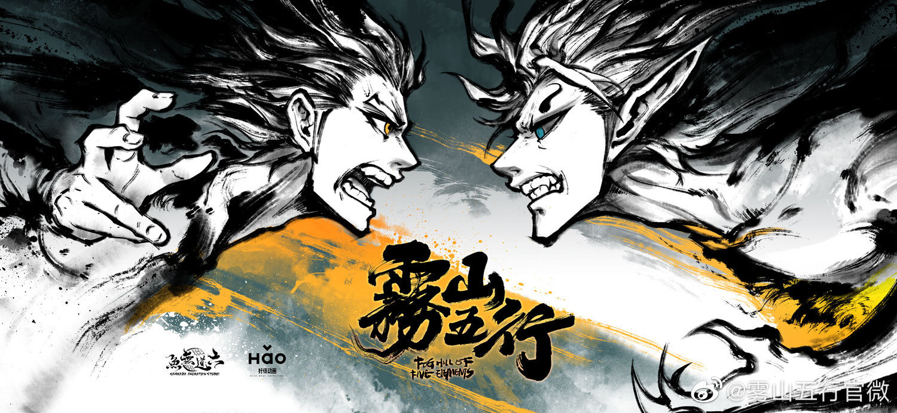

雾山五行

《雾山五行》是由六道无鱼动画工作室制作的原创网络动画片，第一篇章于2020年7月26日在哔哩哔哩
开播，全3集。
2021年11月，第二篇章犀川幻紫林篇发布水墨概念海报并在“2021-2022 bilibili国创动画发布会”上宣布制作消息
。
2023年7月26日晚上八点，第二篇章犀川幻紫林篇在
哔哩哔哩
开播
。
中文名
雾山五行
动画类型
原创、战斗、玄幻、古风
语 言
普通话
主要角色
闻人翊悬
主要配音
郭盛、
郝祥海
、
叶知秋
、
常蓉珊
地 区
中国内地
导 演
林魂
总编剧
林魂
、
十七
总动画监督
林魂
出品方
六道无鱼动画工作室 ，好传动画 ，bilibili
首播时间
2020年7月26日
网络播放平台
bilibili（中国内地）
播出状态
播出中
集 数
6 集
制片人
十七
音 乐
郭川
、
严世涛
出品人
林魂
、
尚游
动画制作
六道无鱼动画工作室
发行制作
好传动画、幻创动漫
目录
1
剧情介绍
2
主要角色
3
剧集信息
4
作品评价